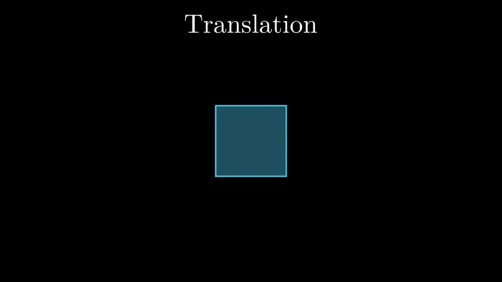
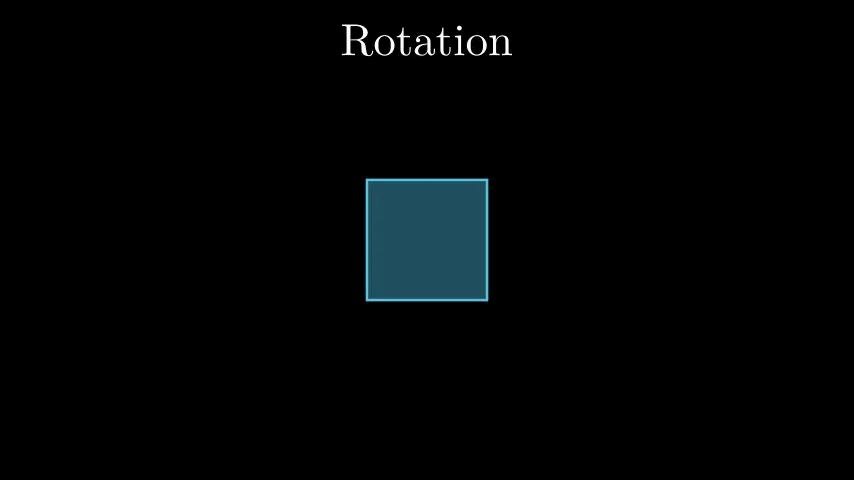
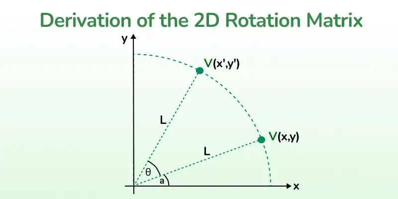
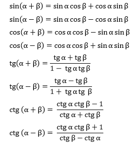

Fullscreen mode
Just press »F« on your keyboard to show your presentation in fullscreen mode. Press the »ESC« key to exit fullscreen mode.
Overview mode
Press "Esc" or "o" keys to toggle the overview mode on and off. While you're in this mode, you can still navigate between slides, as if you were at 1,000 feet above your presentation.
Computational Geometry and Computer Graphics
Lesson 5
Author: Egoshkin Danila Igorevich
Plan
- Vectors again
- Matrices
- Transformation matrices & Affine Transformation
- Linear vs Nonlinear Transformations
- Projection matrix
- Tensors
- Euler angles
- Quaternions
Vectors again
Vectors
\[ \vec{v} = \begin{pmatrix} \color{#FF8080}{x} \\ \color{#80FF80}{y} \\ \color{#80C0FF}{z} \end{pmatrix} \]Scalar vector operations
\[ \begin{pmatrix} \color{#FF8080}{1} \\ \color{#80FF80}{2} \\ \color{#80C0FF}{3} \end{pmatrix} + x \rightarrow \begin{pmatrix} \color{#FF8080}{1} \\ \color{#80FF80}{2} \\ \color{#80C0FF}{3} \end{pmatrix} + \begin{pmatrix} x \\ x \\ x \end{pmatrix} = \begin{pmatrix} \color{#FF8080}{1 + x} \\ \color{#80FF80}{2 + x} \\ \color{#80C0FF}{3 + x} \end{pmatrix} \]Where $$+ can be +, -, \cdot or \div$$
Vector negation
\[ -\bar{v} = -\begin{pmatrix} \color{#FF8080}{v_x} \\ \color{#80C0FF}{v_y} \\ \color{#80FF80}{v_z} \end{pmatrix} = \begin{pmatrix} \color{#FF8080}{-v_x} \\ \color{#80C0FF}{-v_y} \\ \color{#80FF80}{-v_z} \end{pmatrix} \]Transformation: translations

Transformation: translations
\[ \vec{point} = \begin{pmatrix} \color{#FF8080}{1} \\ \color{#80FF80}{1} \end{pmatrix} \] \[ \vec{point_{new}} = \begin{pmatrix} \color{#FF8080}{2} \\ \color{#80FF80}{2} \end{pmatrix} \]Transformation: translations
\[ \vec{point_{new}} = \begin{pmatrix} \color{#FF8080}{point_{x}} + \color{#FF8080}{T_x} \\ \color{#80FF80}{point_{y}} + \color{#80FF80}{T_y} \end{pmatrix} \]Transformation: translations
\[ \begin{bmatrix} \color{#FF8080}{1} & \color{#FF8080}{0} & \color{#FF8080}{T_x} \\ \color{#80FF80}{0} & \color{#80FF80}{1} & \color{#80FF80}{T_y} \\ \color{#D0A0FF}{0} & \color{#D0A0FF}{0} & \color{#D0A0FF}{1} \end{bmatrix} \cdot \begin{pmatrix} x \\ y \\ 1 \end{pmatrix} = \begin{pmatrix} x + \color{#FF8080}{T_x} \\ y + \color{#80FF80}{T_y} \\ 1 \end{pmatrix} \]Transformation: Rotation

Transformation: Rotation
A rotation matrix is used to rotate objects in a coordinate system. Let's rotate a point Q(1, 1) by 90 degrees counterclockwise. Given point Q = (1, 1) and rotation angle θ = 90 degrees, the rotation matrix is: \[ \vec{point} = \begin{pmatrix} \color{#FF8080}{1} \\ \color{#80FF80}{1} \end{pmatrix} \] \[ \vec{point_{new}} = \begin{pmatrix} \color{#FF8080}{-1} \\ \color{#80FF80}{1} \end{pmatrix} \]Transformation: Rotation

Transformation: Rotation
Expressing (x, y) in the polar form, we get: \[ \color{#FF8080}{x = L \cos a} \\ \color{#80FF80}{y = L \sin a} \]
Transformation: Rotation
Similarly, expressing (x', y') in polar form \[ \color{#FF8080}{x' = L \cos (a + θ)} \\ \color{#80FF80}{y' = L \sin (a + θ)} \]
Transformation: Rotation

Transformation: Rotation
Using trigonometric identities we get, \[ \begin{aligned} \text{x'} = L (\cos a \cos \theta - \sin a \sin \theta) \\ = L \cos a \cos \theta - L \sin a \sin \theta \\ \end{aligned} \] Substituting the values from equations (1) and (2): \[ \text{x'} = x \cos \theta - y \sin \theta \qquad \text{(3)} \]Transformation: Rotation
For the y-coordinate, \[ \begin{aligned} \text{y'} = L (\sin a \cos \theta + \cos a \sin \theta) \\ = L \sin a \cos \theta + L \cos a \sin \theta \\ = y \cos \theta + x \sin \theta \qquad \text{(4)} \end{aligned} \]Transformation: Rotation
\[ \begin{bmatrix} \color{#FF8080}{\cos\theta} & \color{#FF8080}{-\sin\theta} & \color{#FF8080}{0} \\ \color{#80FF80}{\sin\theta} & \color{#80FF80}{\cos\theta} & \color{#80FF80}{0} \\ \color{#D0A0FF}{0} & \color{#D0A0FF}{0} & \color{#D0A0FF}{1} \end{bmatrix} \cdot \begin{pmatrix} x \\ y \\ 1 \end{pmatrix} = \begin{pmatrix} x \cos\theta - y \sin\theta \\ x \sin\theta + y \cos\theta \\ 1 \end{pmatrix} \]Transformation: Affine Transformations
Affine transformations are the simplest form of transformation. These transformations are also linear in the sense that they satisfy the following properties:
Some familiar examples of affine transforms are translations, dilations, rotations, shearing, and reflections. Furthermore, any composition of these transformations (like a rotation after a dilation) is another affine transform.
- Lines map to lines
- Points map to points
- Parallel lines stay parallel
Some familiar examples of affine transforms are translations, dilations, rotations, shearing, and reflections. Furthermore, any composition of these transformations (like a rotation after a dilation) is another affine transform.
Links:
- https://en.wikipedia.org/wiki/Transformation_matrix https://www.geeksforgeeks.org/rotation-matrix/ https://www.geeksforgeeks.org/transformation-matrix/ https://towardsdatascience.com/understanding-transformations-in-computer-vision https://xaktly.com/Matrix2Dtransformation.html https://graphicscompendium.com/opengl/12-geometric-transforms https://articulatedrobotics.xyz/tutorials/coordinate-transforms/linear-transforms/ https://www.youtube.com/watch?v=zc8b2Jo7mno&ab_channel=GuerrillaCG https://www.youtube.com/watch?v=zjMuIxRvygQ&ab_channel=3Blue1Brown https://gameprogrammingpatterns.com/